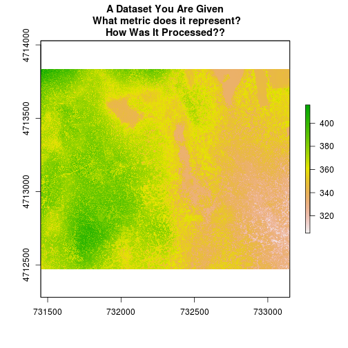

Data About Data -- Intro to Metadata File Formats and Structure
Overview
Teaching: 30 min
Exercises: 30 minQuestions
TBD
Objectives
TBD
This tutorial covers what metadata are and why we need to work with metadata in the context of spatio-temporal data. It covers the three common metadata formats: text file format, web page format and Ecological Metadata Language (EML).
R Skill Level: Beginner
Goals / Objectives
After completing this activity, you will:
- Understand that metadata come in many formats and must be maintained with the data.
- Understand that there is necessary metadata associated with and/or embedded in the data.
- Understand that collecting data requires and includes collecting the metadata.
- Be able to create metadata files for different data types.
Install R Packages
OPTIONAL This tutorial uses these R packages in the examples.
If you want to follow along, please make sure the following packages
are installed:
- raster:
install.packages("raster") - rgdal:
install.packages("rgdal") - devtools
install.packages("devtools") - NOTE: You have to call the devtools library
library(devtools)first, and theninstall_githubwill work. -
eml
install_github("ropensci/EML", build=FALSE, dependencies=c("DEPENDS", "IMPORTS")) - More on Packages in R - Adapted from Software Carpentry.
Additional Resources
- Information on the
rasterR package

What Do I Know About My Data?
The figure above was created from a dataset that you are given called:
HARV_dsmCrop.tif.
- What other information would you like to know about the data used to create the above map before you would feel comfortable using this data to address a research question?
- Think about the data used to create this plot. If you had to share this data with a colleague, what information do they need to know, to efficiently work with it?
How does thinking about this plot and what you’d like to know about it influence how you think about sharing data with a colleague?
Why Do We Need Metadata?
Looking at the map above, we are missing information needed to begin working with the data effectively, including:
Spatial Information
- Spatial Extent: What area does this dataset cover?
- Coordinate reference system: What spatial projection / coordinate reference system is used to store the data? Will it line up with other data?
- Resolution: The data appears to be in raster format. This means it is composed of pixels. What area on the ground does each pixel cover - i.e. What is its spatial resolution?
Data Collection / Processing Methods
- When was the data collected? Is it recent or historical?
- How was this data generated? Is this an output from a model, is it an image from a remote sensing instrument such as a satellite (e.g. Landsat) or collected from an airplane? How were the data collected?
- Units: We can see a scale bar of values to the right of the data, however, what metric and in what units does this represent? Temperature? Elevation? Precipitation?
- How were the data processed?
Contact Information
- Who created this data?
- Who do we contact: We might need permission to use it, have questions about the data, or need more information to give correct attribution.
When we are given a dataset, or when we download it online, we do not know anything about it without proper documentation. This documentation is called metadata - data about the data.
What are Metadata?
Metadata are structured information that describes a dataset. Metadata include a suite of information about the data including:
- Contact information,
- Spatial attributes including: extent, coordinate reference system, resolution,
- Data collection & processing methods,
- and much more.
Without sufficient documentation, it is difficult for us to work with external data - data that we did not collect ourselves.
Why Are Metadata Needed?
We need metadata to work with external data. When metadata are embedded
in a file or in provided in a machine readable format, we can access it directly
in tools like R or Python to support automated workflows. We will talk about
different metadata formats, next.
Metadata Formats
Metadata come in different formats. We will discuss three of those in this tutorial:
- Structured Embedded Metadata: Some file formats supported embedded
metadata which you can access from a tool like
RorPythondirectly from the imported data (e.g. GeoTIFF and HDF5). This data is contained in the same file (or file set as for shapefiles) as the data. - Structured Metadata Files: Structured metadata files, such as the
Ecological Metadata Language (EML), are stored in a machine readable format
which means they can be accessed using a tool like
RorPython. These files must be shared with and accompany the separate data files. There are different file formats and standards so it’s important to understand that standards will vary. - Unstructured Metadata Files: This broad group includes text files, web pages and other documentation that does not follow a particular standard or format, but documents key attributes required to work with the data.
Structured metadata formats are ideal if you can find them because they are most often:
- In a standard, documented format that others use.
- Are machine readable which means you can use them in scripts and algorithms.
Data Note: When you find metadata for a dataset that you are working with, DOWNLOAD AND SAVE IT immediately to the directory on your computer where you saved the data. It is also a good idea to document the URL where you found the metadata and the data in a “readme” text file that is also stored with the data!
Embedded Metadata - GeoTIFF
If we want to automate workflows, it’s ideal for key metadata required to
process our data to be embedded directly in our data files. The GeoTIFF
(fileName.tif) is one common spatio-temporal format that can store
metadata directly in the .tif file itself.
What is a GeoTIFF??
A GeoTIFF file stores metadata or attributes about the file as embedded
tif tags. A GeoTIFF is a standard .tif image format with additional spatial
(georeferencing) information embedded in the file as tags. These tags can
include the following raster metadata:
- A Coordinate Reference System (
crs()) - Spatial Extent (
extent()) - Values for when no data is provided (NoData Value)
- The resolution of the data
Data Note: Your camera uses embedded tags to store information about pictures that you take including the camera make and model, and the time the image was taken.
More about the .tif format:
The raster package in R allows us to directly access .tif tags
programmatically. We can quickly view the spatial extent,
coordinate reference system and resolution of the data.
NOTE: not all geotiffs contain tif tags!
Next, let’s explore the metadata associated with a Digital Surface Model created using LiDAR data for the NEON Harvard Forest field site.
The code below provides an example of how we can access spatial metadata
in R. We cover this in more detail, in the
Intro to Raster Data in R tutorial.
# load libraries
library(raster)
library(rgdal)
# read in a GeoTIFF raster file (.tif) using the raster() function
DSM_HARV <- raster("data/NEON-DS-Airborne-Remote-Sensing/HARV/DSM/HARV_dsmCrop.tif")
# view Coordinate Reference System (note, this often contains horizontal units!)
crs(DSM_HARV)
CRS arguments:
+proj=utm +zone=18 +datum=WGS84 +units=m +no_defs +ellps=WGS84
+towgs84=0,0,0
Spatial Classes in R
There are specific classes designed to store some of the spatial metadata associated with spatial data in R. Let’s have a look.
# assign crs to an object (class) to use for reprojection and other tasks
myCRS <- crs(DSM_HARV)
myCRS
CRS arguments:
+proj=utm +zone=18 +datum=WGS84 +units=m +no_defs +ellps=WGS84
+towgs84=0,0,0
# what class is the new CRS object?
class(myCRS)
[1] "CRS"
attr(,"package")
[1] "sp"
# view spatial extent
extent(DSM_HARV)
class : Extent
xmin : 731453
xmax : 733150
ymin : 4712471
ymax : 4713838
# view spatial resolution
res(DSM_HARV)
[1] 1 1
The spatial extent() is a class as well. Let’s have a look.
# view object extent
myExtent <- extent(DSM_HARV)
myExtent
class : Extent
xmin : 731453
xmax : 733150
ymin : 4712471
ymax : 4713838
class(myExtent)
[1] "Extent"
attr(,"package")
[1] "raster"
# print object name to return object metadata & attribute data
DSM_HARV
class : RasterLayer
dimensions : 1367, 1697, 2319799 (nrow, ncol, ncell)
resolution : 1, 1 (x, y)
extent : 731453, 733150, 4712471, 4713838 (xmin, xmax, ymin, ymax)
coord. ref. : +proj=utm +zone=18 +datum=WGS84 +units=m +no_defs +ellps=WGS84 +towgs84=0,0,0
data source : /home/travis/build/datacarpentry/r-spatial-data-management-intro/_episodes_rmd/data/NEON-DS-Airborne-Remote-Sensing/HARV/DSM/HARV_dsmCrop.tif
names : HARV_dsmCrop
values : 305.07, 416.07 (min, max)
We can use embedded metadata to programmatically perform processing tasks on our data including reprojections, cropping and more.
Challenge - Explore GeoTiff Metadata
Open the file NEON-DS-Airborne-Remote-Sensing/HARV/CHM/HARV_chmCrop.tif. This
file is a Canopy Height Model (CHM) for the Harvard Forest Field site.
- Create an extent and a crs object from the file.
- Is the extent and CRS of the CHM different from the extent and CRS of the DSM that we just opened above?
- Now, open the file
NEON-DS-Landsat-NDVI/HARV/2011/ndvi/005_HARV_ndvi_crop.tif. Compare the extent and crs to the CHM and DSM. Are they different?
CRS arguments:
+proj=utm +zone=18 +datum=WGS84 +units=m +no_defs +ellps=WGS84
+towgs84=0,0,0
class : Extent
xmin : 731453
xmax : 733150
ymin : 4712471
ymax : 4713838
Error in .rasterObjectFromFile(x, band = band, objecttype = "RasterLayer", : Cannot create a RasterLayer object from this file. (file does not exist)
Error in crs(ndvi1.HARV): object 'ndvi1.HARV' not found
Error in extent(ndvi1.HARV): object 'ndvi1.HARV' not found
It appears as if there are some differences between the objects extent and crs. What does this mean for us as we work with these data in the coming tutorials? HINT: we will find out!
We will work with embedded metadata in both the Introduction to Working With Vector Data in R and Introduction to Working With Raster Data in R series!
Embedded Metadata - Hierarchical Data Formats (HDF5)
HDF5 is another file type that supports embedded metadata format. Check out the
NEON Data Skills HDF5 tutorials
to learn more about how HDF5 stores metadata.
Structured Metadata - EML
The Ecological Metadata Language (EML) is a data specification developed specifically to document ecological data. An EML file is created using a XML- based format.
This means that content is embedded within hierarchical tags. For example
the title of a dataset might be embedded in a <title> tag as follows:
<title>Fisher Meteorological Station at Harvard Forest since 2001</title>
Similarly, the creator of a dataset is also be found in a hierarchical tag structure.
<creator>
<individualName>
<givenName>Emery</givenName>
<surName>Boose</surName>
</individualName>
</creator>
EML Terminology
Let’s first discuss some basic EML terminology. In the context of EML, a file documents a dataset. This dataset may consist of one or more files that are documented in the EML document. In the case of our tabular meteorology data, the structure of our EML file includes:
- The dataset: A dataset may contain one or more data tables associated with it that may contain different types of related information. This Harvard meteorological dataset contains data tables with the measurements collected at the tower.
- The data tables: Data tables refer to the actual data that make up the dataset. For the Harvard dataset, each data table contains a suite of meteorological metrics including precipitation and temperature (and associated quality flags) that are aggregated at a particular time interval (e.g. one data table contains monthly average data, another contains 15 minute averaged data, etc)
Work With EML in R
The EML package for R is designed to open, read and create EML formatted
metadata. In this tutorial, we will demonstrate how we can use EML
structured metadata in an automated workflow.
NOTE: To save time, we will not explicitly teach the EML package given it is
still being developed. But we will provide an example of how you can access
EML metadata programmatically using the EML package.
To begin, we will load the EML package directly from
ropensci’s Git repository .
# install R EML tools
library("devtools")
install_github("ropensci/EML", build=FALSE, dependencies=c("DEPENDS", "IMPORTS"))
Using GitHub PAT from envvar GITHUB_PAT
Downloading GitHub repo ropensci/EML@master
from URL https://api.github.com/repos/ropensci/EML/zipball/master
Installing EML
'/home/travis/R-bin/lib/R/bin/R' --no-site-file --no-environ --no-save \
--no-restore --quiet CMD INSTALL \
'/tmp/RtmpoGfG4a/devtools41cf2a102e6f/ropensci-EML-679c126' \
--library='/home/travis/R/Library' --install-tests
# load ROpenSci EML package
library("EML")
# load ggmap for mapping
library(ggmap)
Loading required package: ggplot2
# EML / data location
# http://harvardforest.fas.harvard.edu:8080/exist/apps/datasets/showData.html?id=hf001
# table 4 http://harvardforest.fas.harvard.edu/data/p00/hf001/hf001-04-monthly-m.csv
Next, we will read in the Harvard Forest LTER EML file directly from the
online URL using the read_eml() function. This file describes multiple data
products that are available for downloaded on the
Harvard Forest Data Archive Page for Fisher Meteorological Station.
Note that because this EML file is large, it takes quite a few seconds for the file to load.
# import EML from Harvard Forest Met Data
# note: the original xml file is below commented out
# eml_HARV <- read_eml("http://harvardforest.fas.harvard.edu/data/eml/hf001.xml")
# import a truncated version of the eml file for quicker demonstration
eml_HARV <- read_eml("http://neon-workwithdata.github.io/NEON-R-Spatio-Temporal-Data-and-Management-Intro/hf001-revised.xml")
Error in open.connection(x, "rb"): HTTP error 404.
# view size of object
object.size(eml_HARV)
Error in structure(.Call(C_objectSize, x), class = "object_size"): object 'eml_HARV' not found
# view the object class
class(eml_HARV)
Error in eval(expr, envir, enclos): object 'eml_HARV' not found
The read_eml() function creates an EML class object. This object can be
accessed using slots in R (@) rather than a typical subset [ ] approach.
Explore Metadata Attributes
We can begin to explore the contents of our EML file and associated data that it
describes. Let’s start at the dataset level. We can use slots to view
the contact information for the dataset and a description of the methods.
# view the contact name listed in the file
eml_HARV@dataset@creator
Error in eval(expr, envir, enclos): object 'eml_HARV' not found
# view information about the methods used to collect the data as described in EML
eml_HARV@dataset@methods
Error in eval(expr, envir, enclos): object 'eml_HARV' not found
Identify & Map Data Location
Looking at the coverage for our data, there is only one unique x and y value.
This suggests that our data were collected at one point (x, y) location. We
know this is data from a tower so a point location makes sense. Let’s grab the
x and y coordinates and create a quick context map. We will use ggmap to create our map.
Data Note: If this were a rectangular extent (e.g. from a raster, line or polygon object) we’d want the bounding box, not just a point within the extent. We need the extent to properly geolocate and process the data.
# grab x coordinate from the coverage information
XCoord <- eml_HARV@dataset@coverage@geographicCoverage[[1]]@boundingCoordinates@westBoundingCoordinate@.Data
Error in eval(expr, envir, enclos): object 'eml_HARV' not found
# grab y coordinate from the coverage information
YCoord <- eml_HARV@dataset@coverage@geographicCoverage[[1]]@boundingCoordinates@northBoundingCoordinate@.Data
Error in eval(expr, envir, enclos): object 'eml_HARV' not found
# map <- get_map(location='Harvard', maptype="terrain")
# plot the NW corner of the site.
map <- get_map(location='massachusetts', maptype="toner", zoom=8)
ggmap(map, extent=TRUE) +
geom_point(aes(x=as.numeric(XCoord), y=as.numeric(YCoord)),
color="darkred", size=6, pch=18)
Error in FUN(X[[i]], ...): object 'XCoord' not found

The above example demonstrates how we can extract information from an EML
document and use it programmatically in R! This is just the beginning of what
we can do!
- Learn More: A nice cheatsheet for GGMAP created by NCEAS
Unstructured Metadata - Web pages & Text Files
Some metadata are stored in a less or non-structured format such as a web page or a text file.
Let’s visit the Harvard Forest Fisher Tower webpage to explore some unstructured metadata.
Visiting this page, we see a list of data files available for Harvard Forest that can be downloaded directly. Hovering over the files with our mouse, we can see that these are .csv tabular text files.
Scroll down to the Overview section. Here we start to see information that can be considered metadata about the data available for download.
Challenge - Explore Unstructured Metadata
Explore the metadata stored on the Harvard Forest LTER web page. Answer the following questions.
- What is the time span of the data available for this site?
- You have some questions about these data. Who is the lead investigator / who do you contact for more information? And how do you contact them?
- Where is this field site located? How is the site location information stored in the metadata? Is there any information that may be useful to you viewing the location? (HINT: what if you were not familiar with Harvard as a site or are from another country, etc?)
- Field Site Information: What is the elevation for the site? What is the dominant vegetation cover for the site? HINT: Is dominant vegetation easy to find in the metadata?
- How is snow dealt with in the precipitation data?
- Are there some metadata attributes that might be useful to access in a script
in
RorPythonrather than viewed on a web page?
HINT: Can you answer all of the questions above from the information provided on this website? Is there information that you might prefer to find on that page?
NOTE: This data and metadata are used in the Introduction to Working With Time Series Data in Text Formats in R series.
Unstructured vs. Structured Metadata
Metadata are particularly important when we are working with data that we did not collect ourselves. When you download, or gain access to data from a colleague, or other data provider, be sure to first find and review the metadata. Then, if the data is in a seperate file (e.g., structured or unstructured metadata) make sure you save the metadata in a directory that is closely associated with wherever you save the data itself!
Create Metadata For Your Data
When you are creating data that you want to share with others, it is critical to create your own metadata. While this is beyond the scope of this tutorial, There are many resources available to support metadata documentation including:
- Morpho: an open-source program that can be used to enter metadataa to be stored in a file that conforms to the Ecological Metadata Language (EML) specifications.
Find & Explore Metadata
Refer back to the list of possible data sources at the end of Answer a Spatio-temporal Research Question with Data: Where to Start?. Choose a site that is relevant to your interests and then find a dataset. For this data set find the metadata and answer the following questions:
- What format are the metadata in?
- What metric is collected? Does it have units? If so, what?
- Who collected the data? Using what type of instruments?
ATBD vs Metadata
An Algorithm Theoretical Basis Document (ATBD) is a document which describes the collection and processing methods associated with a data product. While these documents are beyond the scope of this tutorial, it is important to note that often important information about your data may be documented in documents such as ATBDs.
- NEON provides ATBDs for all of it’s data products.
Key Points
TBD